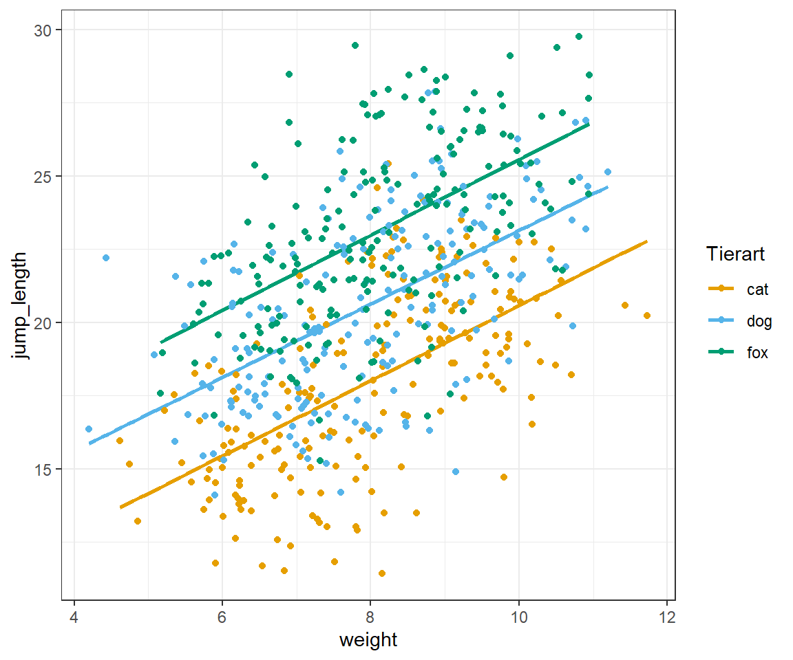
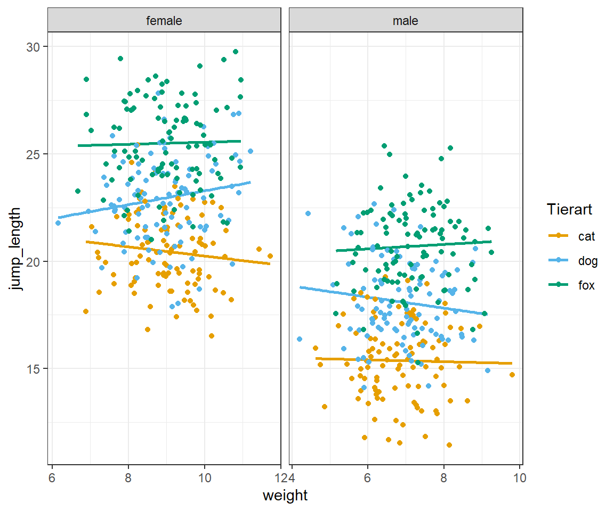

24 Die ANCOVA
Version vom January 29, 2023 um 10:56:15
Eigentlich hat sich die Analysis of Covariance (ANCOVA) etwas überlebt. Wir können mit dem statistischen Modellieren eigentlich alles was die ANCOVA kann plus wir erhalten auch noch Effektschätzer für die Kovariaten und die Faktoren. Dennoch hat die ANCOVA ihren Platz in der Auswertung von Daten. Wenn du ein oder zwei Faktoren hast plus eine numerische Variable, wie das Startgewicht, für die du die Analyse adjustieren möchtest, dann ist die ANCOVA für dich gemacht.
Also kurz gesprochen adjustiert die Analysis of Covariance (ANCOVA) die Faktoren einer ANOVA um eine kontinuierliche Covariate. Adjustiert bedeutet in dem Fall, dass die Effekte des unterschiedlichen Startgewichts von Pflanzen durch das Einbringen der Kovariate mit in der statistischen Analyse berücksichtigt werden. Wir werden hier auch nur über die Nutzung in R sprechen und auf die theoretische Herleitung verzichten.
Wir können die einfaktorielle ANCOVA in folgender Form schreiben. Wir haben haben einen Faktor \(x_1\) und eine Kovariate oder aber ein numerisches \(x_2\). Damit sähe die ANCOVA wie folgt aus.
\[ y \sim x_1 + x_2 \]
Damit ist die ANCOVA aber sehr abstrakt beschrieben. Der eine Faktor kommt damit gar nicht zur Geltung. Deshalb schreiben wir die ANCOVA wie folgt mit einem \(f_1\) für den Faktor und einem \(c_1\) für eine numerische Kovariate. Damit haben wir einen bessere Übersicht.
\[ y \sim f_1 + c_1 \]
Somit erklärt sich die zweifaktorielle ANCOVA schon fast von alleine. Wir erweitern einfach das Modell um einen zweiten Faktor \(f_2\) und haben somit eine zweifaktorielle ANCOVA.
\[ y \sim f_1 + f_2 + c_1 \]
Im Folgenden schauen wir uns einmal die Daten und die Hypothesen zu einer möglichen Fragestellung an.
24.1 Genutzte R Pakete für das Kapitel
Wir wollen folgende R Pakete in diesem Kapitel nutzen.
Am Ende des Kapitels findest du nochmal den gesamten R Code in einem Rutsch zum selber durchführen oder aber kopieren.
24.2 Daten
Für unser Beispiel nutzen wir die Daten der Sprungweite in [cm] von Flöhen auf Hunde-, Katzen- und Füchsen. Damit haben wir den ersten Faktor animal mit drei Leveln. Als Kovariate schauen wir uns das Gewicht als numerische Variable an. Schlussendlich brauchen wir noch das Outcome jump_length als \(y\). Für die zweifaktorielle ANCOVA nehmen wir noch den Faktor sex mit zwei Leveln hinzu.
ancova_tbl <- read_csv2("data/flea_dog_cat_length_weight.csv") %>%
select(animal, sex, jump_length, weight) %>%
mutate(animal = as_factor(animal))In der Tabelle 33.1 ist der Datensatz ancova_tbl nochmal dargestellt.
| animal | sex | jump_length | weight |
|---|---|---|---|
| cat | male | 15.79 | 6.02 |
| cat | male | 18.33 | 5.99 |
| cat | male | 17.58 | 8.05 |
| cat | male | 14.09 | 6.71 |
| cat | male | 18.22 | 6.19 |
| cat | male | 13.49 | 8.18 |
| … | … | … | … |
| fox | female | 27.81 | 8.04 |
| fox | female | 24.02 | 9.03 |
| fox | female | 24.53 | 7.42 |
| fox | female | 24.35 | 9.26 |
| fox | female | 24.36 | 8.85 |
| fox | female | 22.13 | 7.89 |
24.3 Hypothesen für die ANCOVA
Wir haben für jeden Faktor der ANCOVA ein Hypothesenpaar sowie ein Hypothesenpaar für die Kovariate. Im Folgenden sehen wir die jeweiligen Hypothesenpaare.
Einmal für animal, als Haupteffekt. Wir nennen einen Faktor den Hauptfaktor, weil wir an diesem Faktor am meisten interessiert sind. Wenn wir später einen Posthoc Test durchführen würden, dann würden wir diesen Faktor nehmen. Wir sind primär an dem Unterschied der Sprungweiten in [cm] in Gruppen Hund, Katze und Fuchs interessiert.
\[ \begin{aligned} H_0: &\; \bar{y}_{cat} = \bar{y}_{dog} = \bar{y}_{fox}\\ H_A: &\; \bar{y}_{cat} \ne \bar{y}_{dog}\\ \phantom{H_A:} &\; \bar{y}_{cat} \ne \bar{y}_{fox}\\ \phantom{H_A:} &\; \bar{y}_{dog} \ne \bar{y}_{fox}\\ \phantom{H_A:} &\; \mbox{für mindestens ein Paar} \end{aligned} \]
Für die Kovariate testen wir anders. Die Kovariate ist ja eine numerische Variable. Daher ist die Frage, wann gibt es keinen Effekt von weight auf die Sprunglänge? Wenn wir eine parallele Linie hätten. Das heißt, wenn sich der Wert von weight ändert, ändert sich der Wert von jump_length nicht. Wir schreiben, dass sich die Steigung der Geraden nicht ändert. Wir bezeichnen die Steigung einer Graden mit \(\beta\). Wenn kein Effekt vorliegt und die Nullhpyothese gilt, dann ist die Steigung der Geraden \(\beta_{weight} = 0\).
\[ \begin{aligned} H_0: &\; \beta_{weight} = 0\\ H_A: &\; \beta_{weight} \neq 0 \end{aligned} \]
Du kannst dir überlegen, ob due die Interaktion zwischen dem Faktor und der Kovariate mit ins Modell nehmen willst. Eigentlich schauen wir uns immer nur die Interaktion zwischen den Faktoren an. Generell schreiben wir eine Interaktionshypothese immer in Prosa.
\[ \begin{aligned} H_0: &\; \mbox{keine Interaktion}\\ H_A: &\; \mbox{eine Interaktion zwischen animal und site} \end{aligned} \]
Wir haben also jetzt die verschiedenen Hypothesenpaare definiert und schauen uns jetzt die ANCOVA in R einmal in der Anwendung an.
24.4 Die einfaktorielle ANCOVA in R
Wir können die ANCOVA ganz klassisch mit dem linaren Modell fitten. Wir nutzen die Funktion lm() um die Koeffizienten des linearen Modellls zu erhalten. Wir erinnern uns, wir haben haben einen Faktor \(f_1\) und eine Kovariate bezwiehungsweise ein numerisches \(c_1\). In unserem Beispiel sieht dann der Fit des Modells wie folgt aus.
fit_1 <- lm(jump_length ~ animal + weight + animal:weight, data = ancova_tbl)Nachdem wir das Modell in dem Objekt fit_1 gespeichert haben können wir dann das Modell in die Funktion anova() pipen. Die Funktion erkennt, das wir eine ANCOVA rechnen wollen, da wir in unserem Modell einen Faktor und eine Kovariate mit enthalten haben.
fit_1 %>% anova Analysis of Variance Table
Response: jump_length
Df Sum Sq Mean Sq F value Pr(>F)
animal 2 2693.8 1346.88 204.2764 <2e-16 ***
weight 1 1918.0 1917.99 290.8961 <2e-16 ***
animal:weight 2 0.3 0.14 0.0214 0.9788
Residuals 594 3916.5 6.59
---
Signif. codes: 0 '***' 0.001 '**' 0.01 '*' 0.05 '.' 0.1 ' ' 1In der ANCOVA erkennne wir nun, dass der Faktor animal signifikant ist. Der \(p\)-Wert ist mit \(<0.001\) kleiner das das Signifikanzniveau \(\alpha\) von 5%. Ebenso ist die Kovariate weight signifikant. Der \(p\)-Wert ist ebenfalls mit \(<0.001\) kleiner das das Signifikanzniveau \(\alpha\) von 5%. Wir können also schlussfolgern, dass sich mindestens eine Gruppenvergleich der Level des Faktors animal voneinander unterscheidet. Wir wissen auch, dass mit der Zunahme des Gewichts, die Sprunglänge sich ändert.
Was wir nicht wissen, ist die Richtung. Wir wissen nicht, ob mit ansteigenden Gewicht sich die Sprunglänge erhöht oder vermindert. Ebenso wenig wissen wir etwas über den Betrag des Effekts. Wieviel weiter springen denn nun Flöhe mit 1 mg Gewicht mehr? Wir haben aber die Möglichkeit, den Sachverhalt uns einmal in einer Abbildung zu visualisieren. In Abbildung 24.1 sehen wir die Daten einmal als Scatterplot dargestellt.
ggplot(ancova_tbl, aes(weight, jump_length, color = animal)) +
geom_smooth(method = "lm", se = FALSE) +
scale_color_okabeito() +
theme_bw() +
geom_point() +
labs(color = "Tierart", shape = "Geschlecht") 
Der Abbildung 24.1 können wir jetzt die positive Steigung entnehmen sowie die Reihenfolge der Tierarten nach Sprungweiten. Die ANCOVA sollte immer visualisiert werden, da sich hier die Stärke der Methode mit der Visualiserung verbindet.
24.5 Die zweifaktorielle ANCOVA in R
Die zweifaktorielle ANCOVA erweitert die einfaktorielle ANCOVA um einen weiteren Faktor. Das ist manchmal etwas verwirrend, da wir auf einmal drei oder mehr Terme in einem Modell haben. Klassischerweise haben wir nun zwei Faktoren \(f_1\) und \(f_2\) in dem Modell. Weiterhin haben wir nur eine Kovariate \(c_1\). Damit sehe das Modell wie folgt aus.
\[ y \sim f_1 + f_2 + c_1 \]
Wir können das Modell dann in R übertragen und ergänzen noch den Interaktionsterm für die Faktoren animal und sex in dem Modell. Das Modell wird klassisch in der Funktion lm() gefittet.
fit_2 <- lm(jump_length ~ animal + sex + weight + animal:sex, data = ancova_tbl)Nach dem Fit können wir das Modell in dem Obkjekt fit_2 in die Funktion anova() pipen. Die Funktion erkennt die Struktur des Modells und gibt uns eine ANCOVA Ausgabe wieder.
fit_2 %>% anova Analysis of Variance Table
Response: jump_length
Df Sum Sq Mean Sq F value Pr(>F)
animal 2 2693.8 1346.9 359.0568 <2e-16 ***
sex 1 3608.1 3608.1 961.8568 <2e-16 ***
weight 1 0.0 0.0 0.0053 0.9422
animal:sex 2 2.2 1.1 0.2981 0.7424
Residuals 593 2224.4 3.8
---
Signif. codes: 0 '***' 0.001 '**' 0.01 '*' 0.05 '.' 0.1 ' ' 1In der ANCOVA erkennne wir nun, dass der Faktor animal signifikant ist. Der \(p\)-Wert ist mit \(<0.001\) kleiner das das Signifikanzniveau \(\alpha\) von 5%. Ebenso ist der Faktor sex signifikant. Der \(p\)-Wert ist mit \(<0.001\) kleiner das das Signifikanzniveau \(\alpha\) von 5%. Die Kovariate weight ist nicht mehr signifikant. Der \(p\)-Wert ist mit \(0.94\) größer das das Signifikanzniveau \(\alpha\) von 5%. Wir können also schlussfolgern, dass sich mindestens eine Gruppenvergleich der Level des Faktors animal voneinander unterscheidet. Ebenso wie können wir schlussfolgern, dass sich mindestens eine Gruppenvergleich der Level des Faktors site voneinander unterscheidet. Da wir nur zwei Level in dem Faktor sex haben, wissenwir nun, dass sich die beiden Geschlechter der Flöhe in der Sprungweite unterscheiden. Wir wissen auch, dass mit der Zunahme des Gewichts, sich die Sprunglänge nicht ändert.
In Abbildung 24.2 sehen wir nochmal den Zusammenhang dargestellt. Wenn wir die Daten getrennt für den Faktor sex anschauen, dann sehen wir, dass das Gewicht keinen Einfluss mehr auf die Sprungweite hat.
ggplot(ancova_tbl, aes(weight, jump_length, color = animal)) +
geom_smooth(method = "lm", se = FALSE) +
scale_color_okabeito() +
theme_bw() +
geom_point() +
labs(color = "Tierart", shape = "Geschlecht") +
facet_wrap(~ sex, scales = "free_x")
24.6 Und weiter?
Nach einer berechnten ANCOVA können wir zwei Fälle vorliegen haben.
- Wir habe eine nicht signifkante ANCOVA berechnet. Wir können die Nullhypothese \(H_0\) nicht ablehnen und die Mittelwerte über den Faktor sind vermutlich alle gleich. Wir enden hier mit unserer statistischen Analyse.
- Wir haben eine signifikante ANCOVA berechnet. Wir können die Nullhypothese \(H_0\) ablehnen und mindestens ein Gruppenvergleich über mindestens einen Faktor ist vermutlich unterschiedlich. Wir können dann in Kapitel 31 eine Posthoc Analyse rechnen.